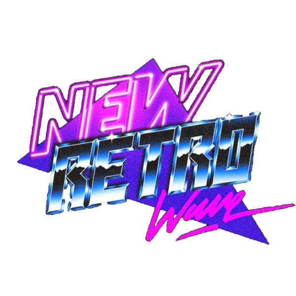

Cici Bici Bir blog evet..ve ben bir metalheadim.
Ama kedilere ve tatlış şeylere olan aşkım sonsuz .Köpekleride çok seviyorum ama kedim için ölürüm .
Sayfayı uzatmak için lorem atmadan önce sana bazı sevdiğim şarkıcıları ve favori şarkılarını listelemek istiyorum .
Metalciyim dedim ama aslında her türlü müziği dinlerim . Synthwave ikinci en sevdiğim tür .

- Metal
- Synthwave
- R&B
- Rock
- Electronic
- Pop
Olarak sıralama yapabilirim favori türlerim için.
İşte senin için Önerilerim !
Not : Daha önce hiç synthwave dinlemediysen ve o eski tınıları içinde barındıran , nostaljik atmosferi sana yeniden yaşatan ,
seni adeta eskilere götüren şarkıları seviyorsan.. işte o hissin arcade versiyonunu sana yaşatacak olan tür synthwave ! Denemeye değer !
| Genre | Singer | Song | Neden Dinlemelisin? |
|---|---|---|---|
| SYNTHWAVE | Gunship | Dark All Day | Bu şarkı ılık , kızıl-mor bir yaz gecesinde üstü açık bir arabada yolculuk ediyormuşsun gibi hissettiriyor ve plus harika bir saksafon solosu var ! Adeta o eski yazları koklatıyor insana . |
| METAL | Arkona | Slavsia Rus! | Metal herkese hitap etmeyebilir fakat bu şarkı folk metal , insanı coşturan melodik bir şarkı . Hiç metal sevmeyenin bile sevebileceği bir şarkı ! |
| SYNTHWAVE | Kavinsky | Nightcall | Bu şarkıyı biliyor olma ihtimalin çok yüksek . Drive ı izledin mi ? Bu versiyonu SYNTH ve tam gece sokak ışıklarının altında araba kullanmalık bir parça . |
| DANCE-POP | Duke Dumont | Ocean Drive | Üff yine bana aşırı nostaljik hissettirebilen bir şarkı . Weeknd in blinding lights şarkısını seviyorsan bu tam sana göre.. O şarkıyı bu listeye yazmamamın tek sebebi zaten çok bilinip seviliyor olması.. |
| MODERN ALTERNATIVE POP | NEONI | Champion | Gaza gelmek , tüm zorlukların üstesinden gelmek , düşüp düşüp yeniden ayağa kalkmak senlikse.. Bu şarkı o ateşi harlayacak . 2021 2022 arası her gün 100 kere dinliyordum . |
| Royalty | Bu şarkıyı da bilmeyen kalmadı ama yazmadan geçemezdim. Spor salonunda go to şarkım :D.. |